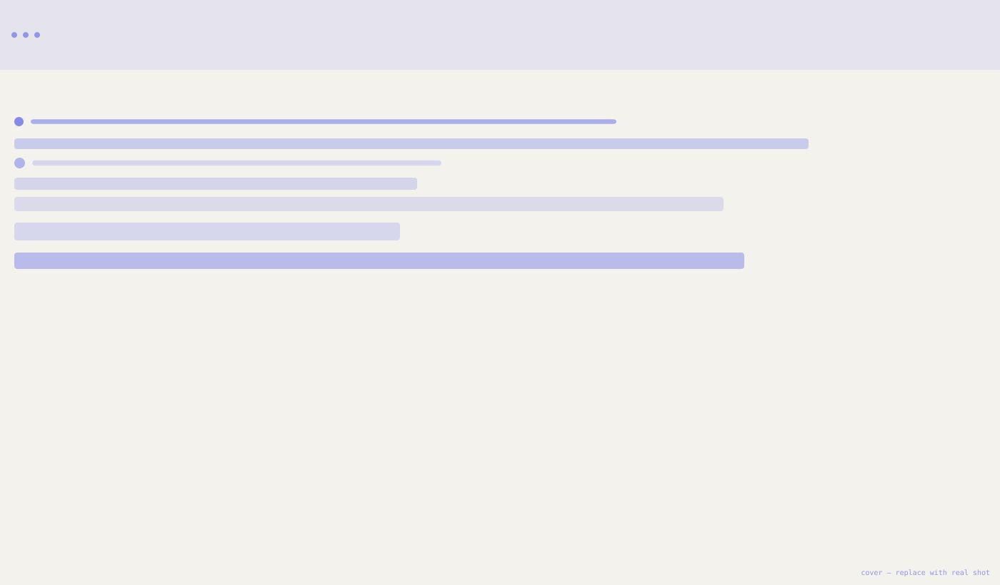
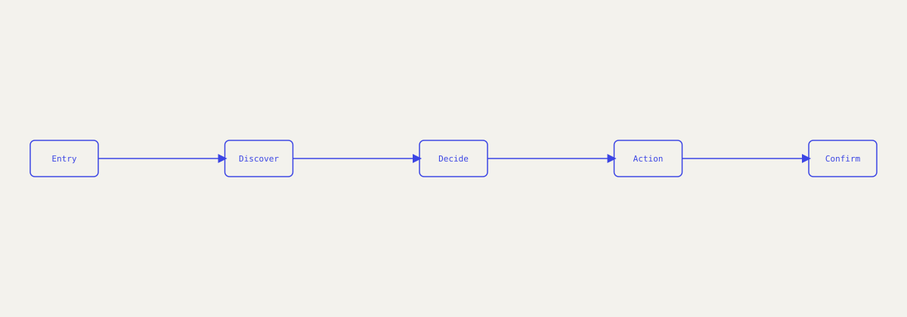
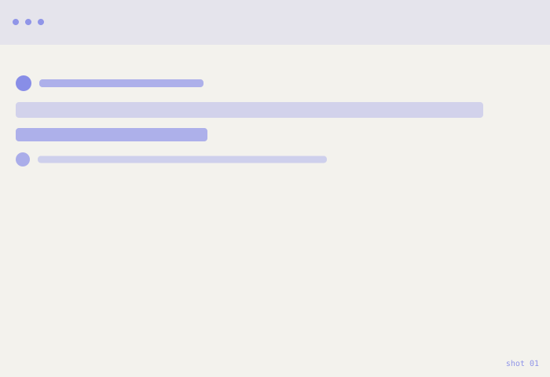
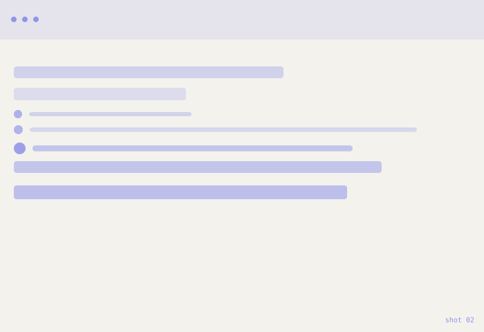
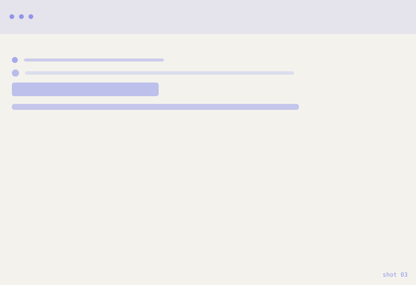
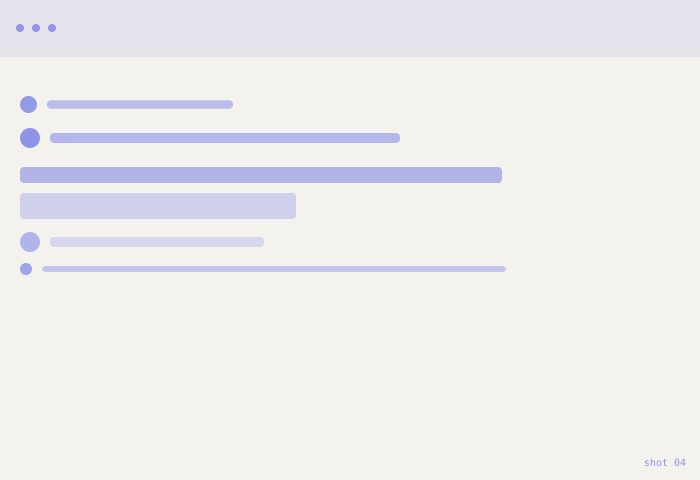

Parda App
A custom curtain & home‑decor ordering app. Redesigning a confusing, multi‑step order flow into something a first‑time customer can finish in three screens.

The problem
Ordering custom curtains usually means picking fabric, size, and fitting details across separate calls, messages, and paper forms. Customers lose track of what they've chosen, and the business loses orders to confusion.
Replace this paragraph with your real problem statement — what was broken, for whom, and how you knew it (interviews, support tickets, analytics, etc.).
UX approach
I mapped the existing order process end‑to‑end before touching any screens, to see exactly where people dropped off or got confused.
- Interviewed 5–8 recent customers about their ordering experience
- Mapped the current process as a flow to find drop‑off points
- Sketched low‑fidelity wireframes for a linear, 3‑step flow
- Tested the flow with paper/Figma prototypes on 4 users
- Refined based on where people hesitated or backtracked
From browse to order
The redesigned flow collapses fabric selection, measurements, and checkout into three connected steps, with progress always visible.

Replace this diagram with your real user‑flow export from Figma or FigJam.
Result & learnings
Describe the outcome here — what changed for the user, what you'd measure (completion rate, time‑to‑order, support tickets), and one or two things you'd do differently next time.
Shots
Replace these with real screenshots from Figma or your shipped product.



